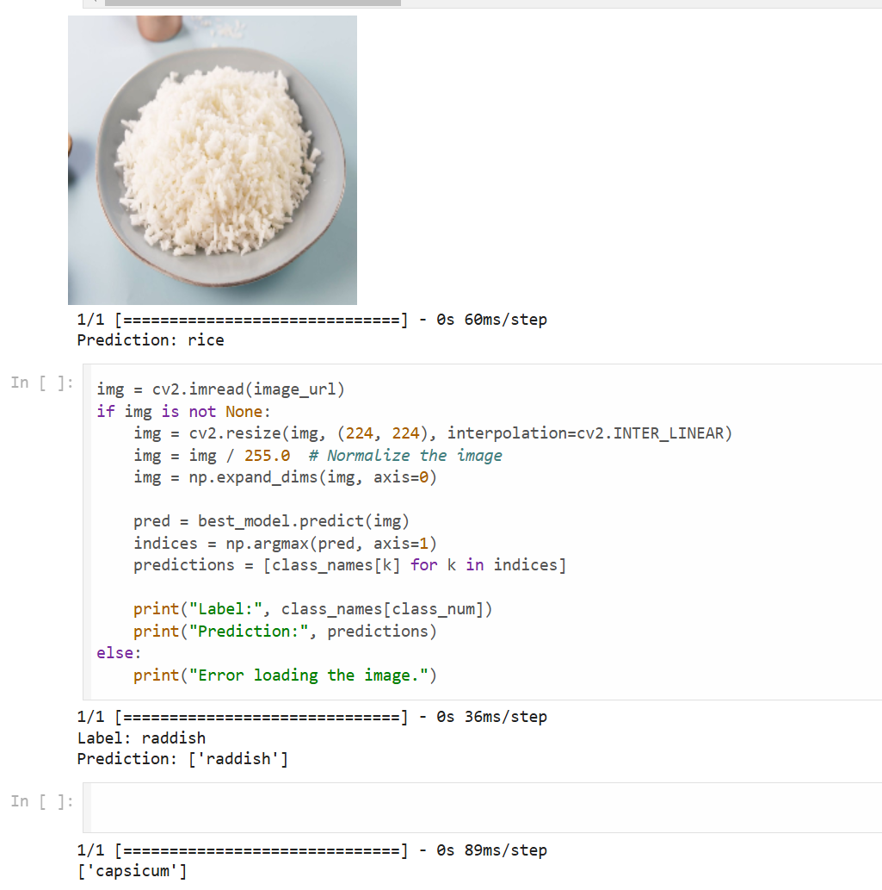
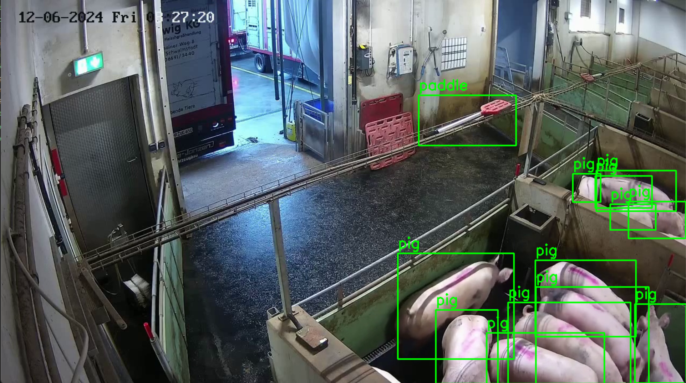

A collection of freelance computer vision projects spanning detection, classification, and real-time surveillance across retail, agriculture, urban infrastructure, and industrial safety.
Built a system where users scan images of grocery items and the model suggests recipes that can be made from the detected ingredients. Developed a 3-layer shallow CNN for food ingredient detection using MobileNetV2 as a pretrained backbone, and integrated the model into a Flask web application.

Trained a YOLOv11 detection model on a custom-labeled dataset to detect humans, pigs, and paddles during livestock unloading operations.

Trained a YOLO model on custom data to detect cars and bikes for traffic management, urban surveillance, and public safety monitoring.
Built a CNN-based vision system to enforce site safety compliance by detecting workers missing required safety equipment such as helmets and tools.
Developed a computer vision pipeline to detect fire in warehouse environments by processing live CCTV footage.